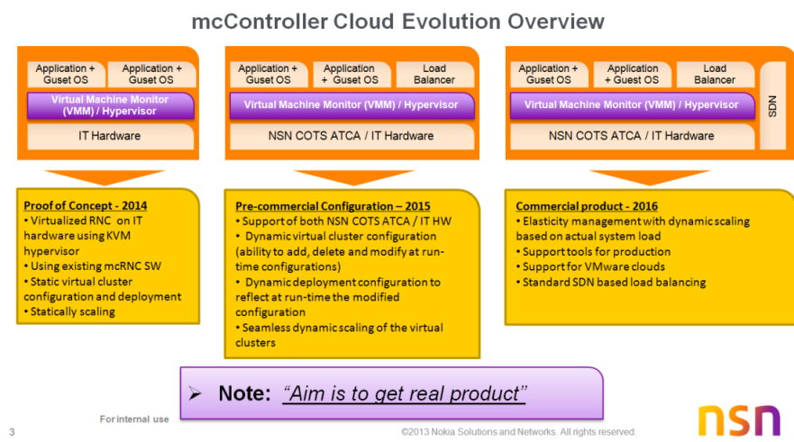

Controller on Cloud
Table of Contents
RNC on Cloud
PoC team introduction
Team information
We are C team
We are Cloud pioneer in NSN
We are Fu weiyi, Wang wei, Ye Changyi, Dong xiao, Tang huanan, Wu Xiaoping, Chi xiaobo, Zhang bing, Liu weiwei, Xu wei. Gao Leijia
Device information
http_proxy in lab
export http_proxy=http://10.106.143.212:8080
We have one Dell server
It's IP : 10.56.212.19 VNC : 10.56.212.19:5
One HP server for cloud platform
MGT IP: 10.56.212.18
USER: root
PASSWD: password
Machine (16GB)
NUMANode L#0 (P#0 8182MB) + Socket L#0 + L3 L#0 (12MB)
L2 L#0 (256KB) + L1d L#0 (32KB) + L1i L#0 (32KB) + Core L#0
PU L#0 (P#0)
PU L#1 (P#12)
L2 L#1 (256KB) + L1d L#1 (32KB) + L1i L#1 (32KB) + Core L#1
PU L#2 (P#2)
PU L#3 (P#14)
L2 L#2 (256KB) + L1d L#2 (32KB) + L1i L#2 (32KB) + Core L#2
PU L#4 (P#4)
PU L#5 (P#16)
L2 L#3 (256KB) + L1d L#3 (32KB) + L1i L#3 (32KB) + Core L#3
PU L#6 (P#6)
PU L#7 (P#18)
L2 L#4 (256KB) + L1d L#4 (32KB) + L1i L#4 (32KB) + Core L#4
PU L#8 (P#8)
PU L#9 (P#20)
L2 L#5 (256KB) + L1d L#5 (32KB) + L1i L#5 (32KB) + Core L#5
PU L#10 (P#10)
PU L#11 (P#22)
NUMANode L#1 (P#1 8192MB) + Socket L#1 + L3 L#1 (12MB)
L2 L#6 (256KB) + L1d L#6 (32KB) + L1i L#6 (32KB) + Core L#6
PU L#12 (P#1)
PU L#13 (P#13)
L2 L#7 (256KB) + L1d L#7 (32KB) + L1i L#7 (32KB) + Core L#7
PU L#14 (P#3)
PU L#15 (P#15)
L2 L#8 (256KB) + L1d L#8 (32KB) + L1i L#8 (32KB) + Core L#8
PU L#16 (P#5)
PU L#17 (P#17)
L2 L#9 (256KB) + L1d L#9 (32KB) + L1i L#9 (32KB) + Core L#9
PU L#18 (P#7)
PU L#19 (P#19)
L2 L#10 (256KB) + L1d L#10 (32KB) + L1i L#10 (32KB) + Core L#10
PU L#20 (P#9)
PU L#21 (P#21)
L2 L#11 (256KB) + L1d L#11 (32KB) + L1i L#11 (32KB) + Core L#11
PU L#22 (P#11)
PU L#23 (P#23)
HostBridge L#0
PCIBridge
PCI 103c:323a
Block L#0 "sda"
PCIBridge
PCI 14e4:1639
Net L#1 "eth0"
PCI 14e4:1639
PCIBridge
PCI 14e4:1639
PCI 14e4:1639
Net L#2 "eth3"
PCIBridge
PCI 1002:515e
GPU L#3 "controlD64"
GPU L#4 "card0"
MGT IP: 10.56.212.3
USER: con-cloud
PASSWD: password
Build Information
Work branch
https://svne1.access.nsn.com/isource/svnroot/scm_il/branches/cloud_controller
branch at 8484@trunk
dpdk version
DPDK (dpdk-1.6.0r1, Intel release version + OVS)
libc version
# /lib/libc.so.6
GNU C Library (Wind River Linux Toolchain 4.4a-431 - User Built) stable release version 2.11.1, by Roland McGrath et al.
Copyright (C) 2009 Free Software Foundation, Inc.
This is free software; see the source for copying conditions.
There is NO warranty; not even for MERCHANTABILITY or FITNESS FOR A
PARTICULAR PURPOSE.
Compiled by GNU CC version 4.4.1.
Compiled on a Linux >>2.6.32-358.23.2.el6.x86_64<< system on 2013-11-18.
Available extensions:
crypt add-on version 2.1 by Michael Glad and others
GNU Libidn by Simon Josefsson
Native POSIX Threads Library by Ulrich Drepper et al
Support for some architectures added on, not maintained in glibc core.
BIND-8.2.3-T5B
For bug reporting instructions, please see:
- RPMs and API
RPM： /linux_builds/IPALight/ci/cougar/cloud_controller API : /linux_builds/IPALight/ci/api one example: [leijgao@hzling10 cloud_controller]$ ls R_IL_14.1.1.0-20140226T182236Z.build.18.WR.x86_64_r.rpms R_IL_14.1.1.0-20140310T122227Z.build.24.WR.x86_64_r.rpms R_IL_14.1.1.0-20140312T162240Z.build.30.WR.x86_64_r.rpms R_IL_14.1.1.0-20140228T102233Z.build.19.WR.x86_64_r.rpms R_IL_14.1.1.0-20140310T154634Z.build.25.WR.x86_64_r.rpms R_IL_14.1.1.0-20140312T182233Z.build.31.WR.x86_64_r.rpms R_IL_14.1.1.0-20140304T162300Z.build.20.WR.x86_64_r.rpms R_IL_14.1.1.0-20140310T180634Z.build.26.WR.x86_64_r.rpms R_IL_14.1.1.0-20140313T122235Z.build.32.WR.x86_64_r.rpms R_IL_14.1.1.0-20140306T162238Z.build.21.WR.x86_64_r.rpms R_IL_14.1.1.0-20140311T103917Z.build.27.WR.x86_64_r.rpms R_IL_14.1.1.0-20140313T162256Z.build.33.WR.x86_64_r.rpms R_IL_14.1.1.0-20140306T222225Z.build.22.WR.x86_64_r.rpms R_IL_14.1.1.0-20140311T122223Z.build.28.WR.x86_64_r.rpms R_IL_14.1.1.0-20140314T102233Z.build.34.WR.x86_64_r.rpms R_IL_14.1.1.0-20140310T105848Z.build.23.WR.x86_64_r.rpms R_IL_14.1.1.0-20140311T142236Z.build.29.WR.x86_64_r.rpms the corresponding api for R_IL_14.1.1.0-20140310T105848Z.build.23.WR.x86_64_r.rpms is [leijgao@hzling10 api]$ ls R_IL_14.1.1.0-20140310T105848Z.build.23.WR.x86_64_r* R_IL_14.1.1.0-20140310T105848Z.build.23.WR.x86_64_r_api.cgr.tar.gz
- Mon Feb 24 11:41:48 2014
Now the FP build and application is build is decided, they are1) R_QNCB.14.6.0_6 2) R_IL_14.1.1.3 3) R_FPT_3.4.1.4
Compile guide
Contact list in hangzhou
| Name | Address |
| Lab related support | Fu weiyi |
Contact list from counterpart
| Name | address |
|---|---|
| Openstack | Openstack reference wiki |
| Erukala, Vijaya (EXT-Tata Consultancy Ser - FI/Espoo); | |
| Singh, Man (NSN - FI/Espoo) | |
| VSP | |
| VGP | |
| UP/UMW | Singh, Satish 1. (NSN - IN/Bangalore) |
| CP | |
| PET lab | Kaartinen, Petri (NSN - FI/Espoo) |
| Integration in Espoo | Karento, Mika (NSN - FI/Espoo) |
| BCQ | Mertsalmi, Jussi (NSN - FI/Espoo) |
WoW
Study
Group1:EAL: -- Zhang bing Memory manager, -- Fu weiyi Memory pool manager, -- Ye changyi Network packet --Wangwei buffer management, -- Ye changyi Timer lib, -- Zhang bing Hash lib. -- Wang wei Development -- Fu weiyi Group2:PMD -- Dong xiao Ring manager -- Chi xiaobo Packet fowarding algorithm -- Wu xiaoping Qos -- Tang huanan Thread safety -- Xu wei Performance -- Chi xiaobo
share folder
\\rncipafs1\DA3\con-cloud-poc
Meetings
- Common
- Chairman rotation in regular meeting
Fu weiyi Wang wei Ye Changyi Dong xiao Tang huanan Wu Xiaoping Chi xiaobo Zhang bing Liu weiwei Xu wei Gao Leijia
- Meeting minutes record in page
Meeting minutes in wiki
- All tasks are tracing in page
Task tracing
- Open issues record in page
Open issues in wiki
- AP followed in page
AP in wiki
- Chairman rotation in regular meeting
- With conterparts
- Internal team
Regular meeting- Working status tracing
- ad hoc
Way of Coopxeration
Study Materials
Project introduction
Overview
./materials/mcController cloud status.pptx
./materials/Controller_Cloud_Proof_of_Concept.pptx
Part I
-------------------------------------------------------------------
Competence devepment for the PoC learning by doing WK5
1- Walk-though demo from LCC lab B5 and contacts
- Setup and lab configuration
- OpenStack and VM configurations
- Arranging this Demo next??
- WK5
2- Walk-though about Flexi NG demo and support and contacts (Markku can help to establish interface)
- Arrange, Tuesday we will agree the timing??
- WK5
3- Walk-through about the FP virtual CI and contacts
- Framework => Centos + openstack + VMWare? (VI) + Guest OS (FP = VGP)
- Arrange next??
- WK5
Part II
-------------------------------------------------------------------
10- Create development branch for the porting (Next week)
- Common branch and compilation environment
- Compilation server is need??
- Mika Karento will create the common branch and maintain the compilation server, AP: Ahmed
- Create a branch ASAP -> Karento (13.5.5_24??)
Part III
---------------------------------------------------------------------------------------------------------------
13- Porting and starting up seccussfully in the VM the mcRNC SW to x86_64 environment (Create ISO )
- Phase #1 (Slow path support)
a- Create a development branch
- Which Guest OS will be used (WR 4.3 or later?)
b- Compile FP (Already Supports for MGW)
- Porting the remining components to x86_64 (In case any deviation exists)
c- Compile IPA light (Partially supported for MGW)
- Porting the remining components to x86_64
- Call management functionality
- DMX
- DC (Static configuration of virtual functional units)
- List all the critical interfaces and check if application can do some hack for the PoC to speed-up
d- CP & O&M compile
- Phase# 2 (Fast path support to bring up in the build)
e- EITP and PAL porting to DPDK and compile
- Meeting with HZ and PAL(BLR) team
- DPDK common meeting is preffered
- UP+Transport = VM??
Part IV
------------------------------------------------------------------------------------------------------------------------
5- Lab setup enviromnmet for PoC
- BLR (HP blade)
- How to setup the lab and who will maintain, AP: Arul+ Satish
- Centos + openstack (Can you check if you can find some old HW to install the Centos 6.5/Openstack)
- CP MT lab (with E2E) in Espoo (now in PC move to HP blade), Niko Tanner??
- HZ lab demo (Fu Weiyi)
- OpenStack installation support (from LCC)
- Integration in Espoo (Mika Karento)
- Openstack intall, networking configuration is ongoing
- PET lab (Petri Kaartinen)
--------------------------------------------------------------------------------------------------------
6- CAPEX calculation for each lab.
- Initail calculation?
- Order for one HP blade or two the CP (Some mobiles)??
- Initail estimation is ready??
--------------------------------------------------------------------------------------------------------------------------------
4- Discuss with FxP VGP and agree mode of cooperation
- ASAP (Mainly IPA light and VGP issues)
- VP proposed to have controller specific common meeting.
- Zhang Bing + Kevin Gao + Fu Weiyi + Ahmed
7- Meetings
- Weekly meeting HZ + BLR (ad hoc)
- Tuesday 8-10 am Helsinki time
- Technical meeting
- weekly meeting for CP
- Erkki + Markku + Tero + Niko + Karento
- No Tuesdays (Thru).
- Start defining the WoW
- Ashwin, Arul will check the other persons and send to Ahmed.
- Weekly meeting with HZ+BLR and ad hoc meeting?
8- IPA light and VGP??
11. Definig the PoC detail plan
- AP: Ahmed target before end of Jan.
12- Start defining the context level architecture view
AP: Ahmed target before end of Jan first version.
14- IPA light + VGP (needed changes)
-??
15- Resource allocation for the whole year 2014
16- Meeting??
- We will provide monthly status report for L4
- Incremental Demo for L4 every two months (always have more than planned)
- We will have monthly meeting where L4 managers can participate if they want.???
Scope of this PoC
PoC is part of the cloud evolution defined in the gragh below 
Roadmap in hangzhou
High level milestone division of phase #1
Phase #1 Full RNC SW virtualization context diagram (LE: 06/14: Fully virtualized RNC SW running on HP HW in standalone environment) Content
- Internal targets: End of 03/14 (Note, this is not final list)
- IPA light ISO creation for x86_64 arch
- Application x86_64 compilation environment and ISO creation
- SIGTRAN RMPs compiled with x86_64
- Deployment changes
- Node, RU,RG,PRB for vCluster RNC
- Platform and application integration
- Standalone vCluster RNC commissioning
- Booting and running the VMs in the cluster
- Create AMR call with pure IPAlight build successfully
- Internal targets: End of 04/14
- Internal traffic between TP and UP go through
- Connectivity with external traffic go through, this means transport functionality porting completed
- Application and platform SW integration porting completion
- Internal target: End of 06/14
- Controller cloud architecture design
- Basic calls and system functionality working with PET and e2e environment
- Performance optimization
- Basic functionality testing done (I&V) in standalone virtual environment
High level milestone division of phase #2 (Draft)
Phase #2 LE 12/14: Scope definition is ongoing ,this list could be changed later based on architecture design
Internal target: End of 09/14 and 12/14
- Architecture changes
- VGP support (This will depend on the VGP readiness)
- Networking
- BP
- Network virtualization (SDN+NFV)
- OpenStack integration (NSN modified stack)
- NSN orchestration support with limited scaling
- Cloud framework
- Product specific plugins
Task tracing
Transport porting
- Mon Feb 24 10:47:09 2014
In phase1, there is a topic about the TP and UP communication under discussion. Following alternatives are under discussion1. EITP and UMW over DPDK use linux kernel dmxmsg service, and expand dmxmsg kernel module to support user plane traffic. One DPDK instance will be regarded as a normal dmxmsg user to transmit both CP and UP. This can be a choice for PoC, but maybe the performance of user plane traffic is a problem and cannot be a final solution. 2. Using linux kernel dmxmsg service for DPDK instance since the dmxmsg performance requirement is not high(at least in EITP), but porting fastdist to DPDK for TP/UP performance reason. 3. Porting dmxmsg SE lib to DPDK, expand dmxmsg DPDK lib to support user plane traffic. 4. Porting both dmxmsg SE lib and fastdist to DPDK.
The fourth one is preferred by Ahmed, we plan to estimate the effort for it.
- Tue Mar 4 10:19:50 2014
For the ip stack over DPDK, we tried the rump kernel, it's too heavy for our use, and the archtecture is not suitable for our usage here is a short report about this research\\rncipafs1\DA3\con-cloud-poc\workshop\IPStack
Next step, we plan to use the example l3fwd in DPDK as a code based, and porting needed function from different parts, such as the lightweight ip stack in Cavium SDK, the IP stack in 6wind, and other examples in DPDK.
Work plan
Current status
- Jan 2014
We have got a 8 people team available. We got HP server built up, Raw DPDK has been deployed on the server, Hello world passed.Openstack is installed successfully, and the VM start up. Still some issue blocked the connection with the VM. we still didn't get a shell of the VM.
Next step is build up the competence of the team
- What is cloud, what it means to RNC
- DPDK
- IP stack over DPDK selection
- Openstack
- VGP,VSP
- IPA light architecture
About the study part, there will be three demos, might happend in week4
Detailed study plan will be discussed by team in week4 meeting.1- Walk-though demo from LCC lab B5 and contacts - Setup and lab configuration - OpenStack and VM configurations - Arranging this Demo next?? - WK5 2- Walk-though about Flexi NG demo and support and contacts (Markku can help to establish interface) - Arrange, Tuesday we will agree the timing?? - WK5 3- Walk-through about the FP virtual CI and contacts - Framework => Centos + openstack + VMWare? (VI) + Guest OS (FP = VGP) - Arrange next?? - WK5
- Feb 2014
- Fri Feb 28 14:19:35 2014
One month passed since the team built up, The compiling of the ipalight on x86_64 are success, we are changing the deploy script for commision. DPDK enviroment is building up on the CLA-0, some of the examples have been verified on the vitural CLA-0.
- Fri Feb 28 14:19:35 2014
Questions
Q: The prgress of the device application?
A: Formal device is still under application. maybe avaliable in three weeks
Q: The backlog item?
A: The formal backlog will be created in week4.
Q: Contact list?
A: For the UMW/UP, Singh, Satish 1. (NSN - IN/Bangalore) Other is still in buidlling
Q: Overall target of this project, and scheduler.
A: PoC work is planned to last one year. Target is a static configured cloud RNC running with live call.
Q: The porting phase architecture
A: Ahmed will plan it after this tough period because of P8 issue, In hangzhou team, we will have some proposal.
Meeting minutes
Mon Jan 20 13:40:59 2014
1. Current status sharing
2. Study plan
1. Common knowlege study in week4
2. Divde into two groups
Group1: Ye changyi, Zhang bing, Fu weiyi, Liu weiwei, Wang wei,
Group2: Dongxiao, Chi xiaobo, Zhu tianda, Wu xiaoping, Xu Wei.
Tanghuanan.
Hold workshop in weekly round from week5
Topic:
1) DPDK and Openstack material prepare
2) Start from Group1 in week5
3. Way of working
1) Gerrit + git
2) Select one Scrum master in 20th Feb
3) Create public folder for shared materials
4) Community has been created
5) Mail recored is neccessary for problem tracing
6) Study output need to be stored in one shared folder
4. Direction selection
This will be done after the first round study
Workshops in week4:
1. Call end to end process Wangwei
2. Current transport plan implementation in mcRNC Zhang bing
3. Openstack/VSP/VGP/DPDK VMware and KVM introduction in 30 slides Gao Leijia
Wed Feb 18 14:24:46 2014
1) Current status a. Compilation and SW porting and VM configurations. i. Compilation is ongoing for whole IL SW (VM nodes are working with only FP SW in HZ) 1. https://workspaces.emea.nsn-net.net/sites/RCOCPHZC/Wiki/work%20tracing.aspx ii. FP build is 3.4 (RU50 uses 3.4). AP: Ahmed, Check the build ID (FP, IL and RNC) iii. In PoC we will use simple IP stack in DPDK based on some open source project (This means before the VGP support is ready) iv. In first demo 03/2014, bring all the SW into Virtual Infractures and make internal connectivity work (If possible we will try dummy calls) v. In second demo 04/2014, make the basics calls (Internal, hack the code to make it work??) vi. In third demo 06/2014, make both calls PS and AMR through 2) Next steps and future plans a. The challenge will be the transport part b. UP endianess is the major challenge, Intel compilation support for big-endian code could help: Ahmed to check if Intel has cross compilation support c. DMX/fastDist (vSwitch can handle our etherType), in demo they will not be changes. AP: Satish/Ahmed/Zhang Bing check the internal communication for both DMX and fastDist, Zhang Bing can check the effort needed for the porting the fastDist. d. DMX can be used both UP and control plane? AP: Zhang Bing/Satish/Ahmed to check if the DMX can be used for both traffic control plane and UP, list the limitations. Target: Friday e. One tech meeting after study to analyze and agree is needed and should be arranged. 3) AOB a. Trip to HZ for Satish 04/2014, AP: Ahmed. b. Workshop plans should be completed this week, AP: Ahmed c. SCM support is needed for the application, AP: Ahmed to agree with Kai and Karento d. ILMAN is OK, they are already now supporting and they created the cloud branch for the project. 4) MoO a. Weekly meeting b. One wiki page for the whole project, can be re-used the HZ page?
Tue Apr 8 10:10:37 2014
- Call management part was verified, and only CCH created failed, need to be traced later. Based on the current testing requirement, AMR call has been created successfully, we plan to postpone this job after first demostration.
- Signaling part, SIGTRAN and Iub signaling has not been tested, need to arrange the testing. planned in this week.
- Integrate fastpath functionality(IPUDP/GTP/RTP/RTCP, etc) with Fastdistlib, Dmxmsglib.
- Add RU for EITP over DPDK, and launch it in vRNC.
- Porting the UPsim for traffic testing on platform level.
- Build the vRNC testing environment in new HP server.